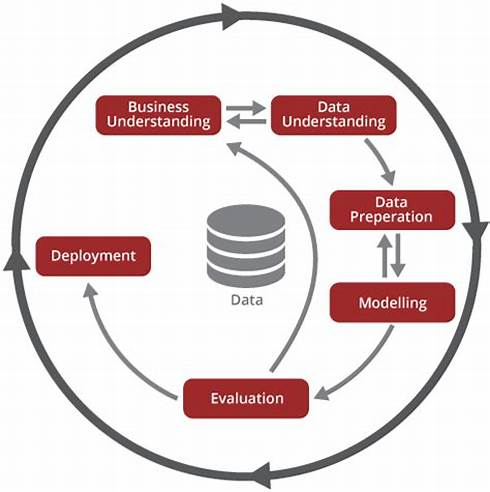

- Desenvolvimento de Modelo de Machine Learning
Pré-TreinamentoTreinamentoPós-Treinamento- Visão Geral da Metodologia CRISP-DM
Desenvolvimento de Modelo de Machine Learning
Este projeto segue uma abordagem estruturada para o desenvolvimento de modelos de Machine Learning, utilizando a metodologia do CRISP-DM dentro de três grandes grupos:
Pré-Treinamento
Treinamento
Pós-Treinamento
As etapas do processo do CRISP-DM serão inseridas entre esses grupos.
Visão Geral da Metodologia CRISP-DM
A metodologia CRISP-DM (Cross-Industry Standard Process for Data Mining) é um estrutura abrangente que tem se destacado na abordagem de projetos de Ciência de Dados, essa metodologia é composta por seis fases interativas que guiam os profissionais de ciência de dados durante todo o processo de descoberta de conhecimento a partir de dados. Vamos explorar cada uma dessas fases em detalhes:
-
Compreensão do Negócio (Business Understanding) Antes de iniciar um projeto de análise de dados, é essencial compreender o contexto e os objetivos do negócio. Nesta fase, definimos claramente as metas do projeto e as alinhamos aos objetivos estratégicos da organização.
-
Compreensão dos Dados (Data Understanding) Coletar dados relevantes é fundamental para o sucesso do projeto. Nessa fase, exploramos e nos familiarizamos com os dados disponíveis, identificamos lacunas e problemas potenciais, e avaliamos a qualidade e a adequação dos dados para o projeto.
-
Preparação dos Dados (Data Preparation) Os dados brutos raramente estão prontos para a análise. Nesta fase, realizamos a limpeza dos dados, tratamos valores ausentes ou inconsistentes e integramos diferentes fontes de dados. O objetivo é criar um conjunto de dados preparado para as etapas subsequentes.
-
Modelagem (Modeling) A fase de modelagem envolve a aplicação de técnicas e algoritmos de modelagem de dados aos dados preparados. Selecionamos as técnicas mais adequadas, como regressão, classificação ou agrupamento, e ajustamos e avaliamos os modelos para garantir sua precisão e eficácia.
-
Avaliação (Evaluation) A avaliação dos modelos desenvolvidos é crucial para medir sua qualidade e desempenho. Nesta fase, utilizamos métodos como validação cruzada e métricas de desempenho para avaliar o quão bem os modelos se saem em dados não vistos. Com base nessa avaliação, podemos ajustar e aprimorar os modelos, se necessário.
-
Implantação (Deployment) A fase final da metodologia CRISP-DM é a implantação do modelo em um ambiente de produção. Integramos o modelo aos sistemas existentes, monitoramos seu desempenho contínuo e garantimos a adoção pela equipe de negócios.
